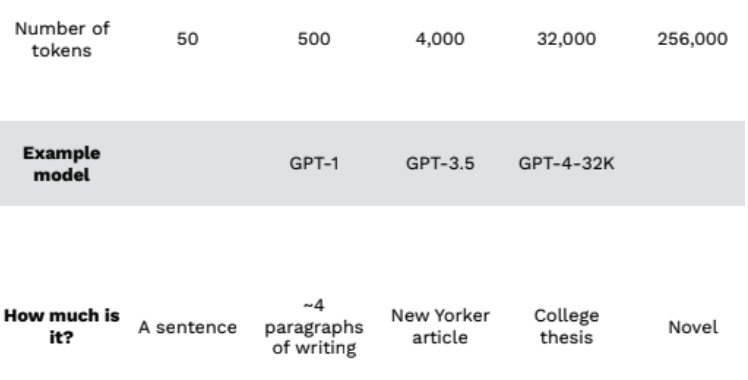
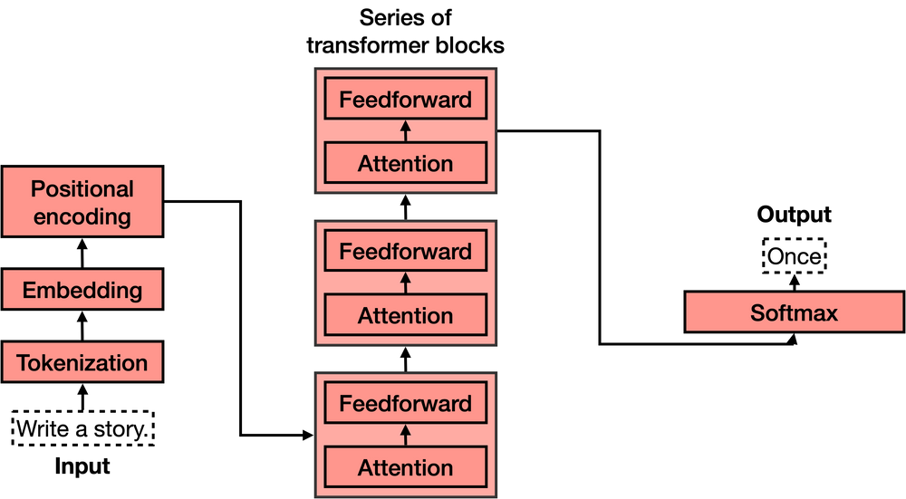
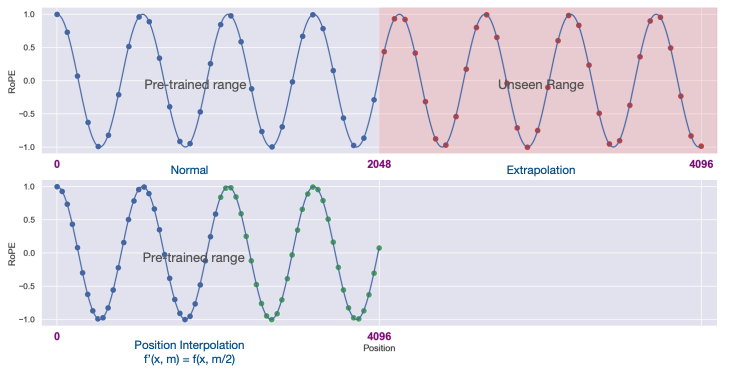

Introduction
In this post, I aim to summarize my learnings so far and share them for you dear reader of this blog post.
As many might be aware, In the realm of large language models (LLMs) context length stands as a critical limitation. Training on extensive context lengths poses a significant challenge due to the quadratic complexity involved.
Quadratic Complexity in Transformers
Definition:
Transformers, especially their self-attention mechanism, exhibit a quadratic computational complexity concerning the input sequence length. This arises due to each token in the sequence interacting with every other token, resulting in (N^2) interactions for an input sequence of length (N).
Implications:
- The computational cost is proportional to (N^2). - As the sequence length doubles, the computational cost quadruples. - This rapid growth in computational demands can become prohibitive for very long sequences, making it challenging for tasks where extended context is crucial.
Having understood the fundamentals, let’s delve deeper into the challenges associated with quadratic complexity.
Challenges:
The primary challenge lies in managing this complexity, especially when working with extensive context lengths, without compromising the model’s performance. This balance between complexity and performance remains a focal point in ongoing research in the field.
Transformers, especially their self-attention mechanism, have a quadratic computational complexity in relation to the input sequence length. This arises from each token in the sequence interacting with every other token.
For an input sequence of length (N), there are (N^2) interactions, causing the computational cost to be proportional to (N^2). This means that as the sequence length doubles, the computational cost quadruples. This rapid growth in computational demands becomes prohibitive for very long sequences, posing challenges in tasks where extended context is crucial. :::
Figure: A visual comparison of context length in human-readable terms.

The context length of the base model varies, with Falcon allowing up to 2K tokens and LLAMA2 accommodating up to 4K tokens, but we also have models like MPT trained with Alibi attention that can in theory support up to infinite context lengths.
Which parts of Transformer architecture, can we hack to extend context length?
Transformers serve as the backbone of many state-of-the-art NLP model Transformer has 4 main parts:
- Tokenization
- Embedding
- Positional encoding
- Transformer block (several of these)
- Softmax

Typically, to extend the context length, the context length we need to hack the positional encoding or/and attention mechanism, but given the fact that the attention mechanism is the most computationally expensive part of the Transformer, and there is lot of attention (pun intened) to open-acess models like LLAMA2 and Falcon lets try to better understand attention to the positional encoding, specifically in the context of Rotatry Positional Encoding (RoPE)
Transformers process input, Not sequentially but in parallel, hence need a way to know the order of the words So if you want to give lot of context to LLM, you need to make sure that you don’t essentially lose the order of the words.
So this part just adds a positional vector to each word, in order to keep track of the positions of the words.

Now that we know we have a unique vector corresponding to the sentence, and that this vector carries the information on all the words in the sentence and their order.
The Linear Scaling Trick
Simple but needs minimal fine-tuning to observe the best results.
Rotary position embeddings (RoPE) used by LLAMA and Falcon are a variant of the positional encoding and they have very.nice mathematical properties, but it turns out they are realaly bad at extrapolating, But turns out we can linearly interpolate by simply Downscaling and divide the position index by a scaling factor. Adn this method of Linear scaling was independently and simultaneously discovered by the Reddit user /u/kaiokendev and the Meta team

Dynamic Scaling Trick
More advanced technique, works okay without fine-tuning, but can benefit from it.
Turns out Scaling the RoPE linearly is not optimal to evenly distribute information, In Fourier space
As an alternative to the linear scaling trick, the dynamic scaling trick wasm suggeste by u//bloc97/ provides an even more efficient solution. Basically if you apply Neural Tangent Kernel (NTK) theory to this problem, it becomes clear that simply interpolating the RoPE’s fourier space “linearly” is very sub-optimal, as it prevents the network to distinguish the order and positions of tokens that are very close by. Borrowing from NTK literature, scaling down the fourier features too much will eventually even prevent succesful finetunes (this is corroborated by the recent paper by Meta that suggests an upper bound of ~600x)
There is Significant performance drop of RoPe Scaling methods due to static quantization, dynamic quantization should be good to go
Curse of Naive Evaluation
After rise of this tricks many in open-source community started to use them, but they were all evaluting via perplixity, while it is good strating point it is not the best way to evaluate the performance of the model, but
The first ~5 tokens in each segment contribute most of the loss. The shorter model has to deal with double the amount of early token areas!
— Ofir Press (@OfirPress) July 12, 2023
We showed in our Shortformer paper that if you use this naïve evaluation method, longer models will always appear to be better–> pic.twitter.com/mbHsIwrYxe
Do We Really Need It?
Current language models do not effectively use their entire context, and that retrieval is still a crucial ingredient for effectively augmenting language models with external knowledge.
from [Information Overload: The Challenges of Expanding Context Windows in Large Language Models]https://samaya.ai/blog/
I would agree to this quote, and add that this seems to be behaviur of Transformer based architecture, the ML community have really being paying “attention” to this architecture, magic.dev is doing for example, they are not using Transformers and they recently announced LTM-1: an LLM with a 5,000,000 token context window, which is way above, but being an undiscoloed architecture i am highly hopeful and optimistic that it utilizes the context better than Transformers, especially after speaking to the ceo of magic Eric Steinberger I was coninced they are cooking something really good.
Takeaways
Navigating the realm of Transformers, we’ve unveiled both their potential and the challenges they present, especially concerning context length. While the quadratic complexity poses significant hurdles, our exploration shows that there are strategies and techniques to mitigate these challenges. As we push the boundaries of what’s possible, it’s essential to remember that every challenge in technology is an invitation to innovate. And as we innovate, we not only solve problems but also discover new horizons.